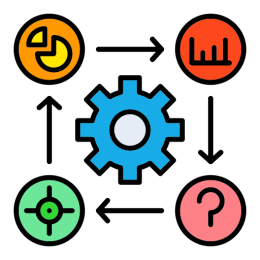
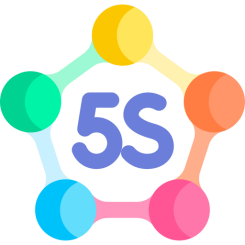

O Que é Lean
Trata-se de um corpo de conhecimento cuja essência é a capacidade de eliminar desperdícios continuamente e resolver problemas de maneira sistemática.
História

A filosofia Lean surgiu na Toyota, no Japão, logo após a segunda
guerra mundial. O criador foi Taiichi Ohno, engenheiro da Toyota.
Taiichi liderou o desenvolvimento de um sistema de gestão entre as
décadas de 50 e 60.
Toyota de Produção (TPS) ganhou superioridade em relação as demais
empresas do segmento, principalmente em relação a produtividade e
níveis de qualidade.
O termo Lean ganhou notoriedade com a publicação do livro “A Máquina
que Mudou o Mundo” (The Machine that Changed the World), de Womack,
Jones e Roos, publicado nos EUA em 1990.
Ferramentas
Relatório A3
o Relatório A3 oferece uma abordagem visual e colaborativa para a documentação e resolução de problemas.
VSM
Mapeia o fluxo de valor com foco nas informações e materiais que compõem o processo
SIPOC

Faz o mapeamento de alto nível para compreensão da relação entre os processos, os fornecedores externos e internos, os inputs, os outputs e os clientes da empresa.
5S
Elimina desperdícios resultantes dá má organização do ambiente de trabalho
Cadeia de ajuda

Cria uma sequência de atividades necessárias para se resolver um problema e os recursos necessários que devem estar disponíveis,
MFA

Compreender a voz do cliente e planejar melhorias que sejam conectadas às suas necessidades.
Benefícios
A implantação do Lean proporciona uma série de benefícios para sua organização:

Casos de Sucessos
Vale

Aplicação do metodo Lean na empresa Vale, utiizando a ferramenta 5S foi capaz de reduzir o desperdÍcio principalmente de tempo, identificar problemas com mais rapidez e melhoraR o fuxo de trabalho.
TechnipFMC
Lean também foi aplicado na TechnipFMC, adotando a metodologia A3 deixando o ambiente mais organizado
Sobre Nós
Grupo formado pela Beatriz Santos, Edjane Oliveira, Larissa e Thainá Eduardo, quatro mulheres que procuram ser protagonistas da sua própria história, em busca de novos rumos, direção e destino através da tecnologia.